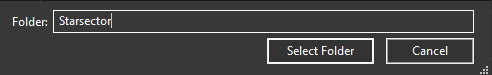

Current project and original vanilla hull, shown at the same scale.
1:1 is the unmodified original hull. Use Apply scale in the editor to resize your project; the original reference stays fixed.
Add independent copies to your ship library. Game files and bundled examples stay unchanged.
Choose a source folder or a .ship file.
Choose a source folder to browse ships.

Click Browse game / mod folder, then confirm with Select Folder.
Opening a copy protects unsaved work. Library originals stay available for another copy.
Couldn't find Starsector's default location.Please select your Starsector installation location folder.